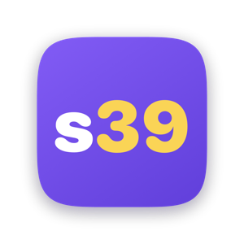
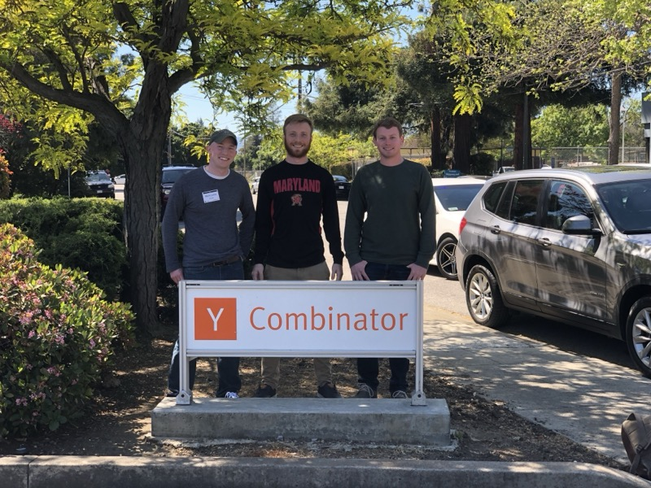
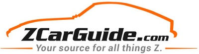
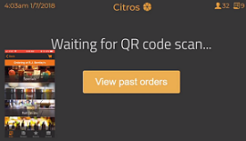
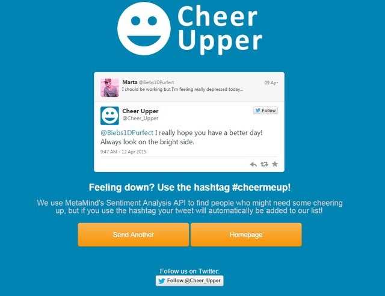
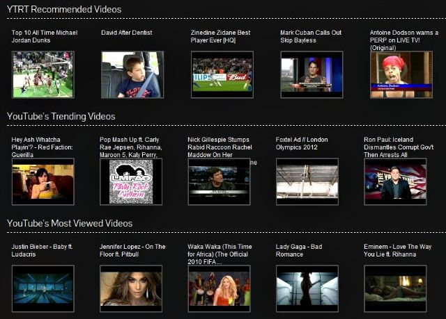
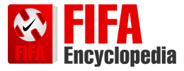

A selection of things I have built across consumer products, internal tools, mobile apps, content businesses, and early internet experiments.

Seven39 is a social network that is only open from 7:39 to 10:39pm: no infinite timeline, no ads, a 200-character post limit, and a countdown clock the rest of the day.
I designed and built it end to end — native iOS and Android apps built from scratch to support the experience, a web client, and the backend behind all three. Android is live on Google Play; the iOS app is currently submitted to Apple for public release, with a TestFlight beta running in the meantime.
Usage so far: 5,500+ users, 40,000+ posts and replies, and 52,000+ likes. Building a product that only runs three hours a day still meant building a fully operational, stable, resilient social network: per-user moderation status, rate limiting, temporary and permanent bans, and content filtering.
It spent a day at the top of Hacker News and was covered by The Verge and eMarketer, and many others, including some international coverage.

Decibel was a collaborative live-audio product built with friends from college. The core experience let someone start a live stream while listeners requested to join, which meant the engineering work had to handle real-time audio, mobile UX, session state, and the social dynamics of a live room.
We applied to Y Combinator before launch and were invited to interview, though the project did not end up funded.
Sitelytics was an iOS app for checking Amazon Associates earnings from a phone. There was no public API for the data I needed, so the app used local credential storage, a background web view, and injected JavaScript to retrieve reporting data from the existing web interface.

ZCarGuide grew from my own experience maintaining a Datsun 240Z into a content and listings site for other owners. It combined writing, search-driven growth, affiliate monetization, and custom WordPress/PHP work.
The listings section pushed the project beyond publishing into software: JavaScript and PHP on the front end, a WordPress plugin for maintaining inventory, and product decisions shaped by a specific enthusiast community.

Citros was a point-of-sale system for bars, and one of the largest solo systems I have built. It included a Swift iOS app, a PhoneGap-based Android app running on a rooted tablet, a Ruby/Sinatra REST API, PostgreSQL, and Socket.io communication.
The project also crossed into hardware: a custom tablet clamp designed for a fast-paced bar environment, LED/backlighting controlled by Arduino, and Bluetooth communication between the hardware and Android app.

CheerUpper was a 36-hour hackathon project built with Anthony DiMeo and Billy Sluder at the University of Maryland. It found tweets from people who seemed sad or discouraged, then let other users anonymously send positive replies through the CheerUpper Twitter account.
The project won Twitter's Best Use of API award, received an honorable mention from MetaMind, and earned coverage from outlets including Major League Hacking, The Daily Dot, CBC Radio, and ABC Australia's Future Tense.

YouTube RealTime turned timestamped YouTube comments into a synchronized feed that appeared beside the video as those moments arrived. Comments about 1:50 in a video would appear at 1:50 during playback.

FIFA Encyclopedia was my first real internet project: a static site that grew into PHP and eventually a custom WordPress theme as traffic increased. I monetized it with Google AdSense and affiliate programs while learning how web publishing, search, and software fit together.
The site received more than 12 million lifetime impressions.